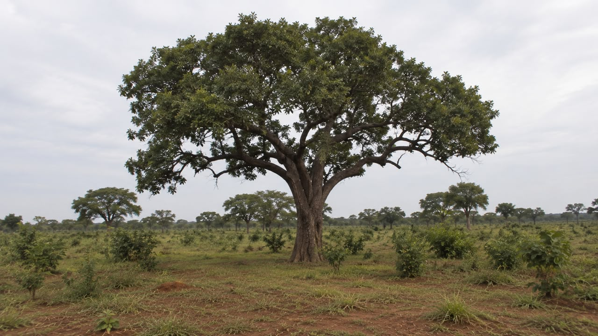
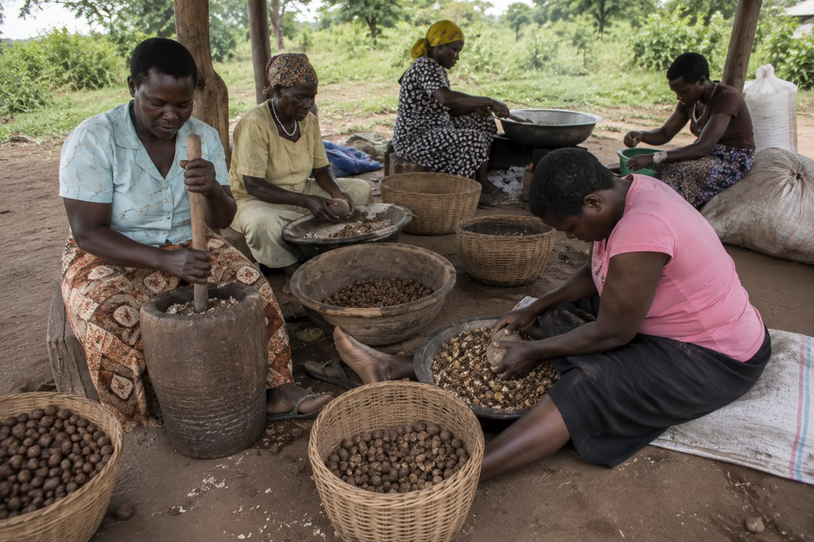
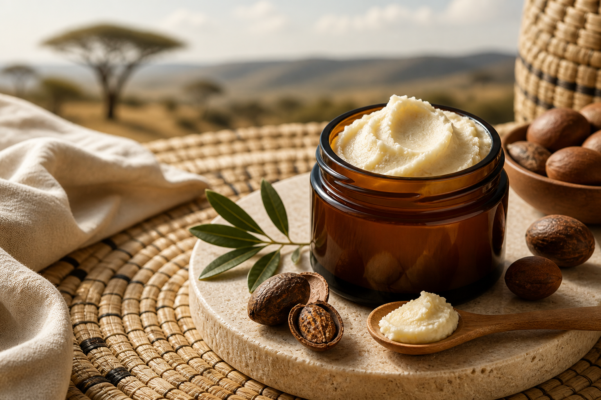
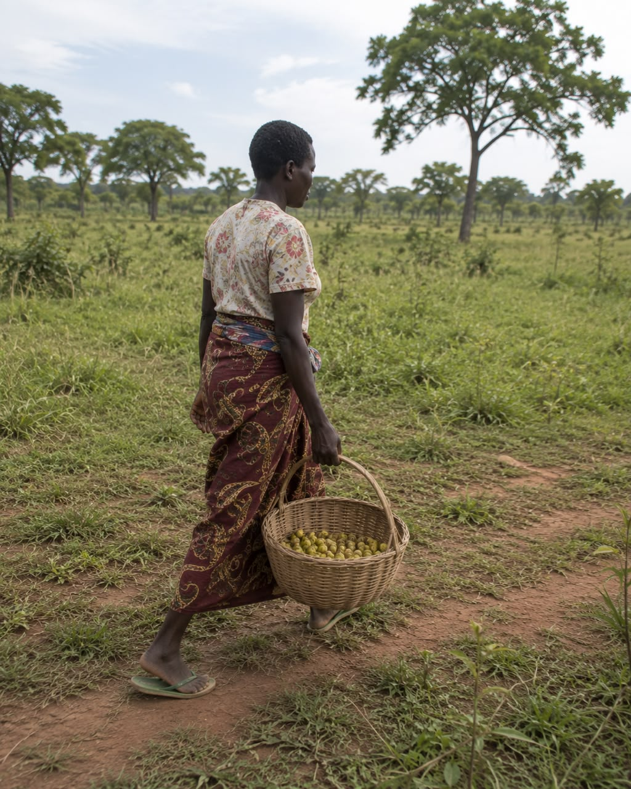
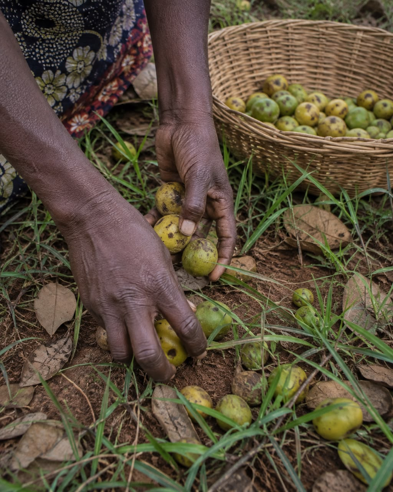
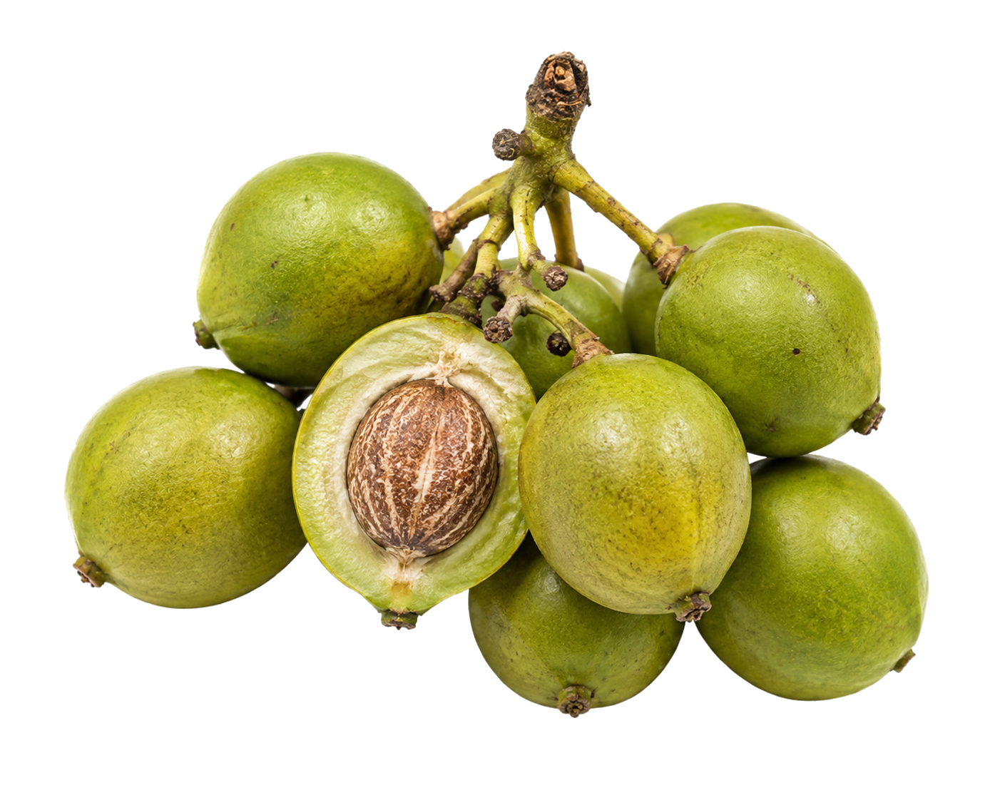

Ethical Sourcing
Direct partnership with harvesting communities in Northern Uganda.
Ethical sourcing and purity guarantee
Light, subtle, naturally sweet nutty aroma.


Direct partnership with harvesting communities in Northern Uganda.
100% cold-pressed shea. Zero additives, fragrances, or synthetic fillers.
Batch-tested for safety and microbial integrity for export standards.
Pure from Harvest to Jar

Zuri Nilotica begins with wild shea trees and women-led harvesting communities in Northern Uganda, where fallen nuts become a rare, silky balm.
What to know
Vitellaria nilotica grows wild along the East African Nile belt. It's rarer and harder to source than the shea most people have used, with a naturally silkier feel straight out of the jar.
Most shea butter comes from Vitellaria paradoxa, grown across West Africa. Zuri Nilotica is different because it comes from Vitellaria nilotica, a wild variety found only along the East African Nile belt, in Northern Uganda and South Sudan.
It's rarer, harder to source, and feels different in the jar: silkier, smoother, and quicker to melt in. That difference is the whole reason this brand exists.
Wild fallen nuts are gathered, sorted, dried, and cold-pressed with care through direct partnerships with women-led communities.
From tree to butter

01Women harvesters gather wild fallen nuts in season across Northern Uganda. Care at collection protects the quality of the butter.

02The nuts are cleaned, sorted, shelled, and naturally dried to preserve their character before pressing.
The prepared nuts are cold-pressed at the source, producing the smooth, quick-absorbing texture that distinguishes Nilotica.

Why the tree matters
Every jar depends on living shea landscapes. Tree conservation protects future harvests and the rare ingredient at the heart of Zuri Nilotica.
Direct cooperative partnerships and cooperative premiums help finance community infrastructure, women's financial independence, and conservation in Northern Uganda.
Choosing Zuri Nilotica connects modern skincare to a real place, real expertise, and a source worth protecting.
You know the butter comes from Northern Uganda and why Nilotica feels silky and absorbs quickly.
Wild fallen nuts are gathered and prepared through direct partnerships with women-led communities.
Fair-trade premiums help support cooperative communities and conserve shea trees for future harvests.
Why we share the source
Zuri Nilotica contains one ingredient: cold-pressed Nilotica shea butter. No synthetic fillers and no added fragrance. Only its naturally silky texture.
We share the source because unrefined luxury should be transparent: where it grows, who prepares it, and why it performs differently.
Ready for daily care